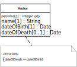

Integrity constraints (or simply constraints)
are logical conditions on the data of an app. They may take many different
forms. The most important type of constraints, property
constraints, define conditions on the admissible property
values of an object. They are defined for an object type (or class) such
that they apply to all objects of that type. We concentrate on the most
important cases of property constraints:
String Length Constraints
require that the length of a string value for an attribute is
less than a certain maximum number, or greater than a minimum
number.
Mandatory Value Constraints
require that a property must have a value. For instance, a person
must have a name, so the name attribute must not be empty.
Range Constraints
require that an attribute must have a value from the value space
of the type that has been defined as its range. For instance, an integer
attribute must not have the value "aaa".
Interval Constraints
require that the value of a numeric attribute must be in a
specific interval.
Pattern Constraints
require that a string attribute's value must match a certain
pattern defined by a regular expression.
Cardinality Constraints
apply to multi-valued properties, only, and require that the
cardinality of a multi-valued property's value set is not less than a
given minimum cardinality or not greater than a given maximum
cardinality.
Uniqueness Constraints (also called 'Key
Constraints')
require that a property's value is unique among all instances of
the given object type.
Referential Integrity Constraints
require that the values of a reference property refer to an
existing object in the range of the reference property.
Frozen Value Constraints
require that the value of a property must not be changed after it
has been assigned initially.
The visual language of UML class diagrams supports defining
integrity constraints either in a special way for special cases (like with
predefined keywords), or, in the general case, with the help of
invariants, which are conditions expressed either in plain English
or in the Object Constraint Language
(OCL) and shown in a special type of rectangle attached to the
model element concerned. We use UML class diagrams for modeling constraints
in design models that are independent of a specific programming
language or technology platform.
UML class
diagrams provide special support for expressing multiplicity (or
cardinality) constraints. This type of constraint allows to specify a lower
multiplicity (minimum cardinality) or an upper multiplicity (maximum
cardinality), or both, for a property or an association end. In UML, this
takes the form of a multiplicity expression l..u where the
lower multiplicity l is a non-negative integer and the upper
multiplicity u is either a positive integer not smaller than
l or the special value * standing for
unbounded. For showing property multiplicity (or cardinality)
constrains in a class diagram, multiplicity expressions are enclosed in
brackets and appended to the property name, as shown in the
Person class rectangle below.
In the following sections,
we discuss the different types of property constraints listed above in more
detail. We also show how to express some of them in computational languages
such as UML class diagrams, SQL table creation statements,
JavaScript model class definitions, or the annotation-based
languages Java Bean Validation annotations and ASP.NET Data
Annotations.
Any systematic approach to constraint validation
also requires to define a set of error (or 'exception') classes, including
one for each of the standard property constraints listed
above.
String Length Constraints
The length of a
string value for a property such as the title of a book may have to be
constrained, typically rather by a maximum length, but possibly also by a
minimum length. In an SQL table definition, a maximum string length can be
specified in parenthesis appended to the SQL datatype CHAR or
VARCHAR, as in VARCHAR(50).
UML does not
define any special way of expressing string length constraints in class
diagrams. Of course, we always have the option to use an invariant
for expressing any kind of constraint, but it seems preferable to use a
simpler form of expressing these property constraints. One option is to
append a maximum length, or both a minimum and a maximum length, in
parenthesis to the datatype name, like so
Another option is to use min/max constraint
keywords in the property modifier list:
Mandatory Value Constraints
A
mandatory value constraint requires that a property must have a
value. This can be expressed in a UML class diagram with the help of a
multiplicity constraint expression where the lower multiplicity is 1. For a
single-valued property, this would result in the multiplicity expression
1..1, or the simplified expression 1, appended to
the property name in brackets. For example, the following class diagram
defines a mandatory value constraint for the property name:
Whenever a
class rectangle does not show a multiplicity expression for a property, the
property is mandatory (and single-valued), that is, the multiplicity
expression 1 is the default for properties.
In an SQL
table creation statement, a mandatory value constraint is expressed in a
table column definition by appending the key phrase NOT NULL to
the column definition as in the following example:
CREATE TABLE persons(
name VARCHAR(30) NOT NULL,
age INTEGER
)
According to this table definition, any row of the
persons table must have a value in the column
name, but not necessarily in the column
age.
In JavaScript, we can code a mandatory value
constraint by a class-level check function that tests if the provided
argument evaluates to a value, as illustrated in the following
example:
Person.checkName = function (n) {
if (n === undefined) {
return "A name must be provided!"; // constraint violation error message
} else return ""; // no constraint violation
};
With Java Bean Validation, a mandatory property like
name is annotated with NotNull in the following
way:
@Entity
public class Person {
@NotNull
private String name;
private int age;
}
The equivalent ASP.NET Data Annotation is Required as
shown in
public class Person {
[Required]
public string name { get; set; }
public int age { get; set; }
}
Range Constraints
A range constraint
requires that a property must have a value from the value space of the type
that has been defined as its range. This is implicitly expressed by defining
a type for a property as its range. For instance, the attribute
age defined for the object type Person in the
class diagram above has the range Integer, so it must not have
a value like "aaa", which does not denote an integer. However, it may have
values like -13 or 321, which also do not make sense as the age of a person.
In a similar way, since its range is String, the attribute
name may have the value "" (the empty string), which is a valid
string that does not make sense as a name.
We can avoid allowing
negative integers like -13 as age values, and the empty string as a name, by
assigning more specific datatypes as range to these attributes, such as
NonNegativeInteger to age, and
NonEmptyString to name. Notice that such more
specific datatypes are neither predefined in SQL nor in common programming
languages, so we have to implement them either in the form of user-defined
types, as supported in SQL-99 database management systems such as
PostgreSQL, or by using suitable additional constraints such as interval
constraints, which are discussed in the next section. In a UML class
diagram, we can simply define NonNegativeInteger and
NonEmptyString as custom datatypes and then use them in the
definition of a property, as illustrated in the following diagram:
In JavaScript, we can code a range constraint by a check
function, as illustrated in the following example:
Person.checkName = function (n) {
if (typeof(n) !== "string" || n.trim() === "") {
return "Name must be a non-empty string!";
} else return "";
};
This check function detects and reports a constraint violation if
the given value for the name property is not of type "string"
or is an empty string.
In a Java EE web app, for declaring empty
strings as non-admissible user input we must set the context parameter
javax.faces.INTERPRET_EMPTY_STRING_SUBMITTED_VALUES_AS_NULL to
true in the web deployment descriptor file
web.xml.
In ASP.NET, empty strings are non-admissible by
default.
Interval Constraints
An interval
constraint requires that an attribute's value must be in a specific
interval, which is specified by a minimum value or a maximum value, or both.
Such a constraint can be defined for any attribute having an ordered type,
but normally we define them only for numeric datatypes or calendar
datatypes. For instance, we may want to define an interval constraint
requiring that the age attribute value must be in the interval
[25,70]. In a class diagram, we can define such a constraint by using the
property modifiers min and max, as shown for the
age attribute of the Driver class in the following
diagram.
In an SQL table creation statement, an interval
constraint is expressed in a table column definition by appending a suitable
CHECK clause to the column definition as in the following
example:
CREATE TABLE drivers(
name VARCHAR NOT NULL,
age INTEGER CHECK (age >= 25 AND age <= 70)
)
In JavaScript, we can code an interval constraint in the following
way:
Driver.checkAge = function (a) {
if (a < 25 || a > 70) {
return "Age must be between 25 and 70!";
} else return "";
};
In Java Bean Validation, we express this interval constraint by
adding the annotations Min() and Max() to the
property age in the following way:
@Entity
public class Driver {
@NotNull
private String name;
@Min(25) @Max(70)
private int age;
}
The equivalent ASP.NET Data Annotation is Range(25,70)
as shown in
public class Driver{
[Required]
public string name { get; set; }
[Range(25,70)]
public int age { get; set; }
}
Pattern Constraints
A pattern constraint
requires that a string attribute's value must match a certain pattern,
typically defined by a regular expression. For instance, for the
object type Book we define an isbn attribute with
the datatype String as its range and add a pattern constraint
requiring that the isbn attribute value must be a 10-digit
string or a 9-digit string followed by "X" to the Book class
rectangle shown in the following diagram.
In an SQL table creation statement, a pattern constraint is
expressed in a table column definition by appending a suitable
CHECK clause to the column definition as in the following
example:
CREATE TABLE books(
isbn VARCHAR(10) NOT NULL CHECK (isbn ~ '^\d{9}(\d|X)$'),
title VARCHAR(50) NOT NULL
)
The ~ (tilde) symbol denotes the regular expression
matching predicate and the regular expression ^\d{9}(\d|X)$
follows the syntax of the POSIX standard (see, e.g. the PostgreSQL
documentation).
In JavaScript, we can code a pattern constraint by
using the built-in regular expression function test, as
illustrated in the following example:
Person.checkIsbn = function (id) {
if (!/\b\d{9}(\d|X)\b/.test( id)) {
return "The ISBN must be a 10-digit string or a 9-digit string followed by 'X'!";
} else return "";
};
In Java EE Bean Validation, this pattern constraint for
isbn is expressed with the annotation Pattern in
the following way:
@Entity
public class Book {
@NotNull
@Pattern(regexp="^\\(\d{9}(\d|X))$")
private String isbn;
@NotNull
private String title;
}
The equivalent ASP.NET Data Annotation is
RegularExpression as shown in
public class Book{
[Required]
[RegularExpression(@"^(\d{9}(\d|X))$")]
public string isbn { get; set; }
public string title { get; set; }
}
Cardinality Constraints
A cardinality
constraint requires that the cardinality of a multi-valued property's value
set is not less than a given minimum cardinality
or not greater than a given maximum cardinality.
In UML, cardinality constraints are called multiplicity
constraints, and minimum and maximum cardinalities are
expressed with the lower bound and the upper bound of the multiplicity
expression, as shown in the following diagram, which contains two examples
of properties with cardinality constraints.
The attribute definition nickNames[0..3] in the
class Person specifies a minimum cardinality of 0 and a maximum
cardinality of 3, with the meaning that a person may have no nickname or at
most 3 nicknames. The reference property definition
members[3..5] in the class Team specifies a
minimum cardinality of 3 and a maximum cardinality of 5, with the meaning
that a team must have at least 3 and at most 5 members.
It's not
obvious how cardinality constraints could be checked in an SQL database, as
there is no explicit concept of cardinality constraints in SQL, and the
generic form of constraint expressions in SQL, assertions, are not supported
by available DBMSs. However, it seems that the best way to implement a
minimum (or maximum) cardinality constraint is an on-delete (or on-insert)
trigger that tests the number of rows with the same reference as the deleted
(or inserted) row.
In JavaScript, we can code a cardinality constraint
validation for a multi-valued property by testing the size of the property's
value set, as illustrated in the following example:
Person.checkNickNames = function (nickNames) {
if (nickNames.length > 3) {
return "There must be no more than 3 nicknames!";
} else return "";
};
With Java Bean Validation annotations, we can specify
@Size( max=3)
List<String> nickNames@Size( min=3, max=5)
List<Person> members
Uniqueness
Constraints
A uniqueness constraint (or key
constraint) requires that a property's value (or the value list of a
list of properties in the case of a composite key constraint) is unique
among all instances of the given object type. For instance, in a UML class
diagram with the object type Book we can define the
isbn attribute to be unique, or, in other
words, a key, by appending the (user-defined) property
modifier keyword key in curly braces to the attribute's
definition in the Book class rectangle shown in the following
diagram.
In an SQL table creation statement, a uniqueness constraint is
expressed by appending the keyword UNIQUE to the column
definition as in the following example:
CREATE TABLE books(
isbn VARCHAR(10) NOT NULL UNIQUE,
title VARCHAR(50) NOT NULL
)
In JavaScript, we can code this uniqueness constraint by a check
function that tests if there is already a book with the given
isbn value in the books table of the app's
database.
Standard Identifiers (Primary
Keys)
A unique attribute (or a composite key) can be declared to be
the standard identifier for objects of a given type, if it is mandatory (or
if all attributes of the composite key are mandatory). We can indicate this
in a UML class diagram with the help of the property modifier
id appended to the declaration of the attribute
isbn as shown in the following diagram.
Notice that such a standard ID declaration implies
both a mandatory value and a uniqueness constraint on the attribute
concerned.
Often, practitioners do not recommended using a composite
key as a standard ID, since composite identifiers are more difficult to
handle and not always supported by tools. Whenever an object type does not
have a key attribute, but only a composite key, it may therefore be
preferable to add an artificial standard ID attribute (also called
surrogate ID) to the object type. However, each additional
surrogate ID has a price: it creates some cognitive and computational
overhead. Consequently, in the case of a simple composite key, it may be
preferable not to add a surrogate ID, but use the composite key as the
standard ID.
There is also an argument against using any real
attribute, such as the isbn attribute, for a standard ID. The
argument points to the risk that the values even of natural ID attributes
like isbn may have to be changed during the life time of a
business object, and any such change would require an unmanageable effort to
change also all corresponding ID references. However, the business semantics
of natural ID attributes implies that they are frozen. Thus, the need of a
value change can only occur in the case of a data input error. But such a
case is normally detected early in the life time of the object concerned,
and at this stage the change of all corresponding ID references is still
manageable.
Standard IDs are called primary keys in
relational databases. We can declare an attribute to be the primary key in
an SQL table creation statement by appending the phrase PRIMARY
KEY to the column definition as in the following example:
CREATE TABLE books(
isbn VARCHAR(10) PRIMARY KEY,
title VARCHAR(50) NOT NULL
)
In object-oriented programming languages, like JavaScript and Java,
we cannot code a standard ID declaration, because this would have to be part
of the metadata of a class definition, and there is no support for such
metadata. However, we should still check the implied mandatory value and
uniqueness constraints.
Referential Integrity
Constraints
A referential integrity constraint requires that the
values of a reference property refer to an object that exists in the
population of the property's range class. Since we do not deal with
reference properties in this chapter, we postpone the discussion of
referential integrity constraints to Part
4 of our tutorial.
Frozen and Read-Only Value
Constraints
A frozen value constraint defined for a property requires
that the value of this property must not be changed after it has been
assigned. This includes the special case of read-only value
constraints on mandatory properties that are initialized at
object creation time.
Typical examples of properties with a frozen
value constraint are standard identifier attributes and event properties. In
the case of events, the semantic principle that the past cannot be changed
prohibits that the property values of events can be changed. In the case of
a standard identifier attribute we may want to prevent users from changing
the ID of an object since this requires that all references to this object
using the old ID value are changed as well, which may be difficult to
achieve (even though SQL provides special support for such ID changes by
means of its ON UPDATE CASCADE clause for the change management
of foreign keys).
The following diagram shows how to define a frozen
value constraint for the isbn attribute:
In Java, a read-only value constraint can
be enforced by declaring the property to be final. In
JavaScript, a read-only property slot can be implemented as in the
following example:
where
the property slot obj.teamSize is made unwritable. An entire
object obj can be frozen with Object.freeze(
obj).
We can implement a frozen value constraint for a property
in the property's setter method like so:
Book.prototype.setIsbn = function (i) {
if (this.isbn === undefined) this.isbn = i;
else console.log("Attempt to re-assign a frozen property!");
}
Beyond property constraints
So far, we
have only discussed how to define and check property constraints.
However, in certain cases there may be also integrity constraints that do
not just depend on the value of a particular property, but rather on
the values of several properties of a particular object
(object-level constraints),
the value of a property before and its value after a change
attempt (dynamic constraints),
the set of all instances of a particular object type (type-level
constraints),
the set of all instances of several object types.
In a class model, property constraints can be expressed within the
property declaration line in a class rectangle (typically with keywords,
such as id, max, etc.). For expressing more
complex constraints, such as object-level or type-level constraints, we can
attach an invariant declaration box to the class rectangle(s)
concerned and express the constraint either in (unambiguous) English or in
the Object
Constraint Language (OCL). A simple example of an object-level
constraint expressed as an OCL invariant is shown in .
An example of an
object-level constraint 
A general
approach for implementing object-level constraint validation
consists of taking the following steps:
Choose a fixed name for an object-level constraint validation
function, such as validate.
For any class that needs object-level constraint validation,
define a validate function returning either a
ConstraintViolation or a NoConstraintViolation
object.
Call this function, if it exists, for the given model
class,
in the UI/view, on form submission;
in the model class, before save, both in the
create and in the update method.